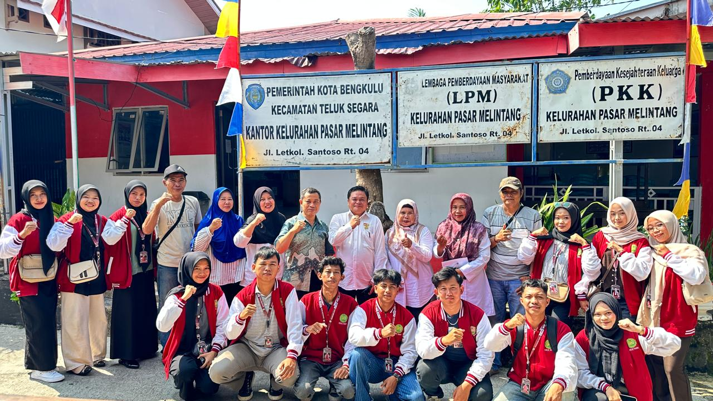
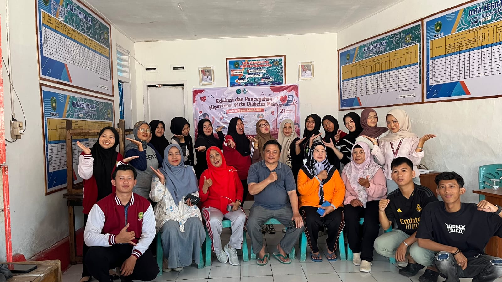
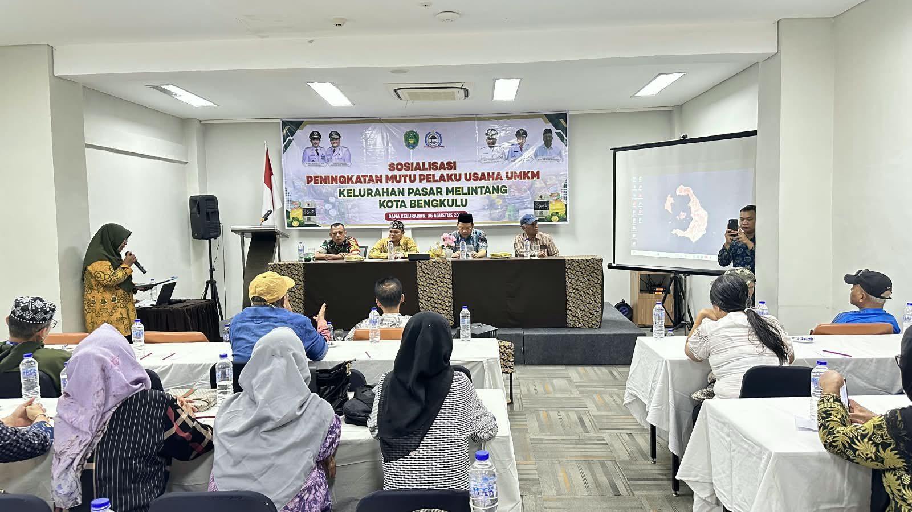
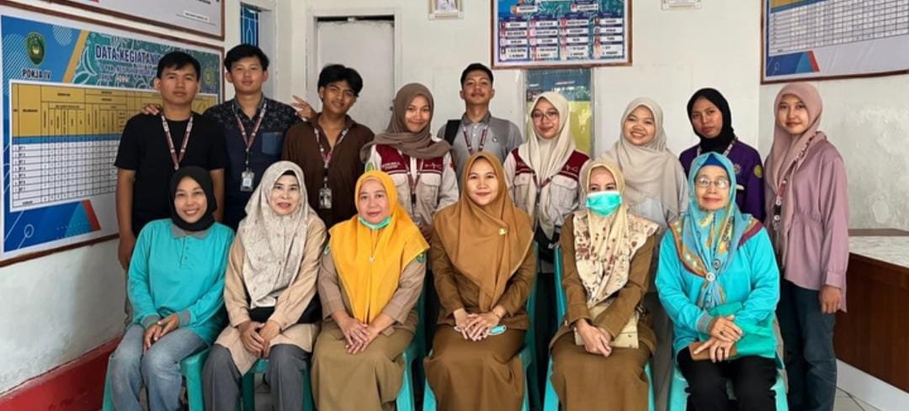

"Melayani dengan Hati, Membangun dengan Karya"

Jl. Letkol Santoso RT.04/ RW.02
Kel. Pasar Melintang, Kec. Teluk Segara, Kota Bengkulu
📞 082377943232
📧 kelurahanpasarmelintan@gmail.com
Dokumentasi kegiatan Kelurahan Pasar Melintang


